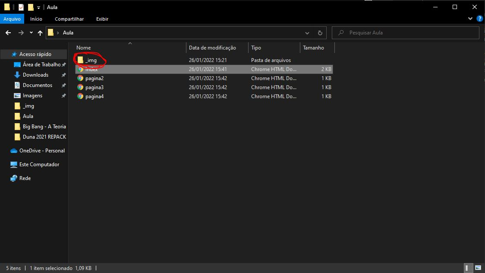
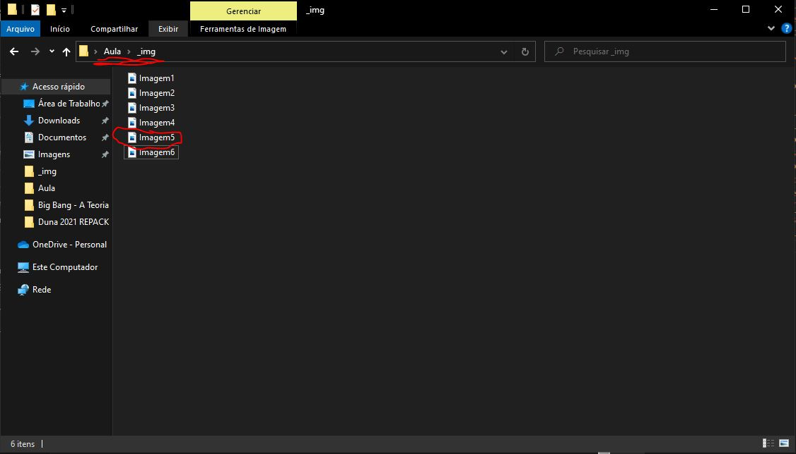

Muito bem, agora você está na pagina 2.
Vocês também podem testar essa tag com uma imagem.
Além disso nós vamos ter o atributo "target" que vai nos permitir escolher a forma em
que a nova pagina vai ser aberta
Inserindo imagens
Beleza, agora vamos ver como eu fiz pra colocar as imagens anteriores na minha
Pagina. Para isso vamos usar a tag <img> essa tag tem alguns atributos, mas vamos
começar com o principal, o atributo src, assim como o href vai ser o atributo que vai
referenciar o caminho da minha imagem, porém dessa vez eu coloquei todas as minhas imagens
em uma pasta dentro da minha pasta raiz para ficar melhor organizado

então eu preciso referenciar o caminho até o meu arquivo de foto. Por exemplo:
<img src="-img/Imagem5.jpeg">

Que vai ficar assim:
clique na imagem bonita a cima